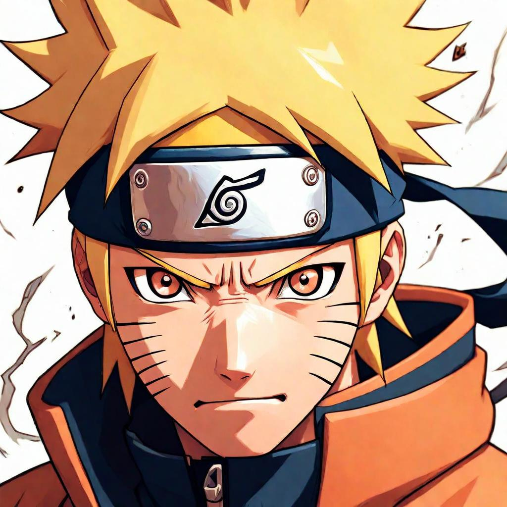

Stance Punks - No Boy, No Cry | Lyrics Meaning and Translation | Sentence for Sentence
"No Boy, No Cry" by Stance Punks is a raw and energetic song that served as the sixth opening theme for the anime series Naruto. The song's gritty melody and defiant lyrics capture themes of rebellion, youthful angst, and the quest for freedom. Stance Punks, a Japanese punk rock band known for their explosive performances, bring their unfiltered emotion and intensity to this track, making it a standout anthem for fans.
In this article, we will explore the lyrics of "No Boy, No Cry" sentence by sentence, providing the original Japanese text, Romaji, and English translation. We will also delve into the deeper meaning behind each line, uncovering how the song's themes resonate with the journey of the characters in Naruto.
Background of the Song
Release Details
"No Boy, No Cry" by Stance Punks was released in 2004 and served as the sixth opening theme for Naruto. The song played from episodes 129 to 153, accompanying some of the most intense and rebellious moments in the series. Its defiant message and punk rock energy made it an instant hit among fans.
Inspiration and Creation
Stance Punks is known for their rebellious lyrics and high-energy performances. "No Boy, No Cry" reflects themes of youthful defiance, the struggle against conformity, and the desire for authentic freedom, mirroring the challenges and growth of Naruto and his friends. The band's ability to combine raw punk energy with heartfelt lyrics has made this song a beloved anthem among listeners.
Sentence-by-Sentence Lyrics Breakdown
Verse 1
Sentence 1:
Original Japanese:
ノーボーイ・ノークライ 満足していこう
Romaji:
No booi nookurai manzoku shite ikou
English Translation:
No boy, no cry, let's be satisfied
Meaning and Interpretation: This line sets the tone with a defiant statement about seeking satisfaction and fulfillment despite hardships.
Sentence 2:
Original Japanese:
銀色の空が割れるのを
Romaji:
Giniro no sora ga wareru no wo
English Translation:
Watching the silver sky crack open
Meaning and Interpretation: Creates an image of dramatic change or upheaval, reflecting the desire for transformation.
Sentence 3:
Original Japanese:
僕は突っ立ってボーッと見ていた
Romaji:
Boku wa tsuttatte bootto miteita
English Translation:
I stood there, staring blankly
Meaning and Interpretation: Depicts a sense of aimlessness or contemplation in the face of change.
Sentence 4:
Original Japanese:
退屈に殺られるくらいなら
Romaji:
Taikutsu ni yarareru kurai nara
English Translation:
If boredom is going to kill me
Meaning and Interpretation: Expresses a preference for action and excitement over stagnation.
Sentence 5:
Original Japanese:
死んじまう方がずっとマシさ
Romaji:
Shinjimau hou ga zutto mashi sa
English Translation:
I'd much rather die
Meaning and Interpretation: Conveys the intensity of feeling and the rejection of a mundane existence.
Sentence 6:
Original Japanese:
少年よ聞いてくれ
Romaji:
Shounen yo kiite kure
English Translation:
Boy, listen to me
Meaning and Interpretation: A direct address to the listener, encouraging them to pay attention to the message.
Sentence 7:
Original Japanese:
人間なんてたいしたもんじゃないさ
Romaji:
Ningen nante taishita mon janai sa
English Translation:
Humans aren't such a big deal
Meaning and Interpretation: Reflects a nihilistic or humble view of humanity, emphasizing the need for authenticity.
Chorus
Sentence 1:
Original Japanese:
明日なんてもういらないから
Romaji:
Ashita nante mou iranai kara
English Translation:
I don't need tomorrow anymore
Meaning and Interpretation: Expresses a focus on living in the moment and rejecting conventional concerns about the future.
Sentence 2:
Original Japanese:
握った拳を隠すなよ
Romaji:
Nigitta kobushi wo kakusu na yo
English Translation:
Don't hide your clenched fists
Meaning and Interpretation: Encourages openly expressing one's defiance and determination.
Sentence 3:
Original Japanese:
不安に夢を売りとばすほど
Romaji:
Fuan ni yume wo uritobasu hodo
English Translation:
To the point of selling your dreams to anxiety
Meaning and Interpretation: Highlights the struggle of maintaining dreams in the face of fear and uncertainty.
Sentence 4:
Original Japanese:
まだ老いぼれちゃいないだろ
Romaji:
Mada oiborecha inai daro
English Translation:
You're not old and worn out yet, right?
Meaning and Interpretation: A reminder to retain youthful vigor and not give in to defeatism.
Verse 2
Sentence 1:
Original Japanese:
少年よ心の銃の
Romaji:
Shounen yo kokoro no juu no
English Translation:
Boy, the gun of your heart
Meaning and Interpretation: A metaphor for inner strength and determination.
Sentence 2:
Original Japanese:
引き金を引けるのは君だけさ
Romaji:
Hikigane wo hikeru no wa kimi dake sa
English Translation:
You're the only one who can pull the trigger
Meaning and Interpretation: Empowers the listener to take control of their destiny and actions.
Bridge
Sentence 1:
Original Japanese:
すべての若者は言った 僕の心を切り裂けよ
Romaji:
Subete no wakamono wa itta boku no kokoro wo kirisake yo
English Translation:
All the young people said, "Tear apart my heart"
Meaning and Interpretation: Reflects a collective cry for emotional honesty and raw expression.
Sentence 2:
Original Japanese:
諦めちまった奴には 関係ない話なんだ
Romaji:
Akiramechimatta yatsu ni wa kankei nai hanashi nanda
English Translation:
This has nothing to do with those who have given up
Meaning and Interpretation: Distinguishes between those who still fight for their dreams and those who have surrendered.
Sentence 3:
Original Japanese:
すべての若者は言った 僕ら叫んだこの声は
Romaji:
Subete no wakamono wa itta bokura sakenda kono koe wa
English Translation:
All the young people said, "Our voices that we screamed"
Meaning and Interpretation: Emphasizes the power and unity of collective youthful expression.
Sentence 4:
Original Japanese:
ベッドの下に密んでた自由さ hey
Romaji:
Beddo no shita ni hisondeta jiyuu sa hey
English Translation:
The freedom that was hidden under the bed, hey
Meaning and Interpretation: Symbolizes hidden or suppressed desires for freedom and authenticity.
Chorus Repeat
Sentence 1:
Original Japanese:
ノーボーイ・ノークライ 満足していこう
Romaji:
No booi nookurai manzoku shite ikou
English Translation:
No boy, no cry, let's be satisfied
Meaning and Interpretation: Reiterates the call to seek fulfillment and embrace defiance.
Sentence 2:
Original Japanese:
おいおい
Romaji:
Oi oi
English Translation:
Hey, hey
Meaning and Interpretation: An interjection to draw attention and emphasize urgency.
Sentence 3:
Original Japanese:
分かり合う事も無いまま
Romaji:
Wakariau koto mo nai mama
English Translation:
Without understanding each other
Meaning and Interpretation: Acknowledges the difficulty of achieving mutual understanding.
Sentence 4:
Original Japanese:
吐きちらかしてたあの日の傷が
Romaji:
Hakichirakashiteta ano hi no kizu ga
English Translation:
The wounds from those days we vomited out
Meaning and Interpretation: Refers to the emotional pain and scars from past struggles.
Sentence 5:
Original Japanese:
今もまだ倒れそうな僕を
Romaji:
Ima mo mada taoresou na boku wo
English Translation:
Still almost knocking me down
Meaning and Interpretation: Describes the lingering impact of past pain.
Sentence 6:
Original Japanese:
前に前に引きずっていくんだろう
Romaji:
Mae ni mae ni hikizutte iku ndarou
English Translation:
But still dragging me forward
Meaning and Interpretation: Emphasizes the drive to keep moving forward despite difficulties.
Verse 3
Sentence 1:
Original Japanese:
バラバラになるくらい叫んでみたって
Romaji:
Barabara ni naru kurai sakendemitatte
English Translation:
Even if I scream until I fall apart
Meaning and Interpretation: Expresses the intensity of emotion and the desire to be heard.
Sentence 2:
Original Japanese:
何も答えなんて出ないけど
Romaji:
Nani mo kotae nante denai kedo
English Translation:
No answers come out
Meaning and Interpretation: Acknowledges the uncertainty and lack of clear solutions.
Sentence 3:
Original Japanese:
何もせず座って笑ってる
Romaji:
Nani mo sezu suwatte waratteru
English Translation:
Just sitting and laughing without doing anything
Meaning and Interpretation: Criticizes passivity and complacency.
Sentence 4:
Original Japanese:
あいつらみたいにゃなりたくないんだ
Romaji:
Aitsura mitai nya naritakunain da
English Translation:
I don't want to be like them
Meaning and Interpretation: Rejects the idea of becoming passive and indifferent.
Bridge Repeat
Sentence 1:
Original Japanese:
すべての若者は言った どうしよもなくくだらない
Romaji:
Subete no wakamono wa itta doushiyomonaku kudaranai
English Translation:
All the young people said, "It's hopelessly stupid"
Meaning and Interpretation: Expresses frustration with the absurdity and futility of the status quo.
Sentence 2:
Original Japanese:
この素晴らしい世界に たった今生きているから
Romaji:
Kono subarashii sekai ni tatta ima ikiteiru kara
English Translation:
Because we are living in this wonderful world right now
Meaning and Interpretation: Highlights the irony of living in a beautiful world yet facing struggles.
Sentence 3:
Original Japanese:
すべての若者は言った すべての本当と嘘を
Romaji:
Subete no wakamono wa itta subete no hontou to uso wo
English Translation:
All the young people said, "All the truths and lies"
Meaning and Interpretation: Acknowledges the complexity of navigating truth and deception.
Sentence 4:
Original Japanese:
決して忘れてしまわないように
Romaji:
Kesshite wasurete shimawanai you ni
English Translation:
So we never forget
Meaning and Interpretation: Stresses the importance of remembering and learning from experiences.
Sentence 5:
Original Japanese:
すべての若者は言った 死ぬには若すぎるだろう
Romaji:
Subete no wakamono wa itta shinu ni wa wakasugiru darou
English Translation:
All the young people said, "We're too young to die"
Meaning and Interpretation: Affirms the vitality and potential of youth.
Sentence 6:
Original Japanese:
しらけた面が並んでる からっぽのこの街で
Romaji:
Shiraketa tsura ga naranderu karappo no kono machi de
English Translation:
In this empty town lined with indifferent faces
Meaning and Interpretation: Describes the disconnection and emptiness felt in a conformist society.
Sentence 7:
Original Japanese:
すべての若者は行った 風の無いこの夜に
Romaji:
Subete no wakamono wa itta kaze no nai kono yoru ni
English Translation:
All the young people went out on this windless night
Meaning and Interpretation: Illustrates a moment of quiet determination and action.
Sentence 8:
Original Japanese:
何かを変えようとしてるから
Romaji:
Nanika wo kaeyou to shiteru kara
English Translation:
Because we are trying to change something
Meaning and Interpretation: Emphasizes the drive to bring about change.
Sentence 9:
Original Japanese:
僕らが叫んだこの声は
Romaji:
Bokura ga sakenda kono koe wa
English Translation:
The voices we screamed
Meaning and Interpretation: Reiterates the collective power of their outcry.
Sentence 10:
Original Japanese:
テロリストにだって消せないだろう
Romaji:
Terorisuto ni datte kesenai darou
English Translation:
Even terrorists can't erase it
Meaning and Interpretation: Asserts the indomitable nature of their spirit and message.
Themes and Messages
Major Themes in the Song
- Youthful Defiance: The lyrics emphasize rebellion against conformity and the quest for authentic freedom.
- Emotional Struggle: Reflects the internal and external battles faced by young people.
- Collective Power: Highlights the strength and unity found in shared experiences and expressions of defiance.
Resonance with Listeners
The themes of "No Boy, No Cry" resonate deeply with listeners, especially fans of Naruto, as they reflect the core values of the series. The song's raw energy and powerful message inspire determination and hope, much like Naruto himself.
Translation Accuracy and Interpretation
Challenges of Translating Japanese to English
Translating Japanese lyrics to English involves navigating nuances and cultural differences. Certain phrases and emotions may not have direct equivalents in English, requiring interpretive translation to maintain the song's original intent and impact.
Comparison with Other Translations
- Official vs. Fan Translations: Official translations often aim for accuracy and readability, while fan translations may capture more of the song's emotional and cultural context.
- Interpretation Variations: Different translations can offer various perspectives on the song's meaning, enriching the understanding of its themes.
Connection to Naruto
Fit Within the Anime
"No Boy, No Cry" is a perfect fit for Naruto, capturing the essence of Naruto's journey, filled with dreams, determination, and the struggles of a young ninja. The song's punk rock style matches the intense and rebellious nature of the anime.
Fan Reactions
Fans of Naruto have embraced "No Boy, No Cry" as an iconic opening theme, praising its motivational lyrics and memorable melody. The song is often associated with the pivotal moments in the series, making it a beloved anthem among fans.
Conclusion
In summary, "No Boy, No Cry" by Stance Punks is a powerful and defiant opening theme that perfectly encapsulates the spirit of Naruto. Its meaningful lyrics, raw energy, and connection to the series' core themes of youthful defiance, emotional struggle, and collective power make it an enduring favorite. By examining the song's lyrics sentence by sentence, we gain a deeper appreciation for its impact and the way it mirrors Naruto's journey. We invite you to share your thoughts and interpretations of "No Boy, No Cry" in the comments, and reflect on how this iconic song has inspired you.
Comments